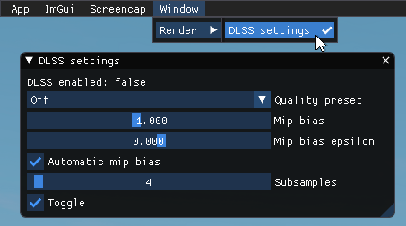
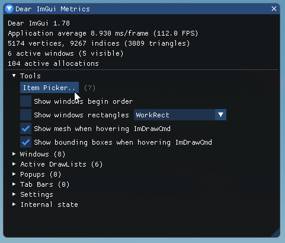

Dear ImGui and ImPlot
Overview
Dear ImGui is an immediate-mode GUI library for C++ designed to facilitate rapid development of content creation and debugging tools. Unlike traditional GUI libraries aimed at general end-user applications, Dear ImGui focuses on simplicity and productivity for developers, making it ideal for creating in-game visualization, debugging, and tool interfaces.
ImPlot, built on top of Dear ImGui, is a library for real-time plotting and data visualization. It enables the creation of interactive plots, making it well-suited for visualizing program data and performance metrics.
Both Dear ImGui and ImPlot are integrated into Dagor Engine (currently used exclusively by the Enlisted project), allowing you to develop custom tools to aid in your current development tasks or even create long-term tools for broader use.

How to Use
Dear ImGui is only available in non-release builds, but it can be used on consoles as well.
You can cycle through ImGui modes using the following hotkeys:
Keyboard: Press
F2to switch between modes.Controller: Press
LS+Dpad Downto toggle modes.
ImGui operates in three modes within the engine:
OFF: ImGui is disabled, allowing the game to run normally without any debug UI. This is the default state when the game launches.
ACTIVE: ImGui is enabled and active, and all input (keyboard, mouse, or controller) is consumed by ImGui.
OVERLAY: ImGui is enabled, but with more transparent window backgrounds. Input is passed through to the game, allowing debug values and visualizations to remain on-screen while playing.
ImGui remembers the position and size of your opened windows by default, and our integration also saves their open/close state. This means that when you relaunch the game, your windows will return exactly to their previous position.
Mouse Input Tips
Ctrl+LMB: Directly edit the value of sliders and drag controls.Hold
Alt: Adjust drag controls with finer precision.Hold
Shift: Adjust drag controls more quickly, with less precision.
{kind=link}
{kind=link}
{kind=link}
Adding Custom Functionality
You can extend the ImGui interface by adding your own functionality using the following methods:
ImGui Function Registration
To add custom functions to the ImGui menu, register a function with a void
return value and no parameters (or a non-capturing lambda with the same
signature) via:
REGISTER_IMGUI_FUNCTION(group, name, func)REGISTER_IMGUI_FUNCTION_EX(group, name, hotkey, priority, func)
These macros will add your function to the main menu bar under the specified
group. The menu item will appear with the name name, and clicking the item
will invoke the registered function.
Additional parameters:
hotkey: This is a cosmetic hint for a hotkey that will be displayed alongside the menu item. It does not actually bind the hotkey. The default value isnullptr, indicating no hotkey.priority: Controls the position of the function in the menu list. Functions with a lower priority will appear higher in the list. The default priority is100.
To use these macros, include gui/dag_imgui.h.
Examples:
REGISTER_IMGUI_FUNCTION_EX("App", "Exit", "Alt+F4", 999, []{ exit_game("exit_from_imgui_menu_bar"); });
REGISTER_IMGUI_FUNCTION_EX("Screencap", "Take screenshot", nullptr, 0, []{ screencap::schedule_screenshot(true); });
REGISTER_IMGUI_FUNCTION_EX("Screencap", "Take screenshot (no GUI)", nullptr, 1, []{ screencap::schedule_screenshot(false); });
{kind=link}
{kind=link}
ImGui Windows
To register your own ImGui window, use the following macros:
REGISTER_IMGUI_WINDOW(group, name, func)REGISTER_IMGUI_WINDOW_EX(group, name, hotkey, priority, func)
These macros will add your function as a window in the Window menu on the main menu bar. A menu item will appear as Window/group/name, allowing you to open the corresponding window.
Your function will be called every frame, and within it, you can add ImGui code to create the desired controls for your window.
The hotkey and priority parameters work the same way as in the ImGui
function registration. You can customize the shortcut for opening the window
(hotkey) and control its position in the menu list (priority).
To use these macros, include gui/dag_imgui.h.
Example:
{kind=link}
DLSS settings window function code in worldRenderer.cpp
static void dlss_settings_imgui()
{
WorldRenderer *wr = (WorldRenderer *)get_world_renderer();
if (!wr)
return;
ImGui::Text("DLSS enabled: %s", dlss.get() ? "true" : "false");
static const char *dlssQualityStrings[] = {"Off", "Ultra-Performance", "Performance", "Balanced", "Quality"};
static const int dlssQualityValues[] = { -1, 3, 0, 1, 2};
int selectedDlssQuality = eastl::find(eastl::begin(dlssQualityValues), eastl::end(dlssQualityValues), dlss_quality.get()) -
eastl::begin(dlssQualityValues);
if (ImGui::Combo("Quality preset", &selectedDlssQuality, dlssQualityStrings, IM_ARRAYSIZE(dlssQualityStrings)))
{
dlss_quality.set(dlssQualityValues[selectedDlssQuality]);
DataBlock blk;
blk.addBlock("video")->setInt("dlssQuality", dlss_quality.get());
::dgs_apply_config_blk(blk, false, false);
FastNameMap changed;
changed.addNameId("video/dlssQuality");
bool applyAfterResetDevice = false;
change_video_mode_request(applyAfterResetDevice);
wr->onSettingsChanged(changed, applyAfterResetDevice);
}
float mipBias = dlss_mip_bias.get();
ImGui::SliderFloat("Mip bias", &mipBias, dlss_mip_bias.getMin(), dlss_mip_bias.getMax());
dlss_mip_bias.set(mipBias);
float mipBiasEpsilon = dlss_mip_bias_epsilon.get();
bool needSetResolution = ImGui::SliderFloat("Mip bias epsilon", &mipBiasEpsilon,
dlss_mip_bias_epsilon.getMin(), dlss_mip_bias_epsilon.getMax());
dlss_mip_bias_epsilon.set(mipBiasEpsilon);
bool dlssAutomaticMipBias = dlss_automatic_mip_bias.get();
needSetResolution |= ImGui::Checkbox("Automatic mip bias", &dlssAutomaticMipBias);
dlss_automatic_mip_bias.set(dlssAutomaticMipBias);
int dlssSubsamples = dlss_subsamples.get();
ImGui::SliderInt("Subsamples", &dlssSubsamples, dlss_subsamples.getMin(), dlss_subsamples.getMax(), "%d", ImGuiSliderFlags_Logarithmic);
dlss_subsamples.set(dlssSubsamples);
needSetResolution |= ImGui::Checkbox("Toggle", &dlss_toggle);
if (needSetResolution)
{
d3d::driver_command(DRV3D_COMMAND_ACQUIRE_OWNERSHIP, NULL, NULL, NULL);
wr->setResolution();
d3d::driver_command(DRV3D_COMMAND_RELEASE_OWNERSHIP, NULL, NULL, NULL);
}
}
REGISTER_IMGUI_WINDOW("Render", "DLSS settings", dlss_settings_imgui);
Custom ImGui Code
The provided macros for registering ImGui windows and functions are convenient, but you can also insert custom ImGui code manually without using them. Just ensure the following guidelines are met:
ImGui code runs every frame.
ImGui code is only executed when
imgui_get_state() != ImGuiState::OFF.It should be placed between
imgui_update()andimgui_render()(orimgui_endframe()).Every update and render code should be fine, as
imgui_update()is called at the beginning of thegame_scene::update()function inapp.cpp, andimgui_render()is called at the end of thedraw_scene()function indrawScene.cpp.
Finding Control Code Examples
Once you’re familiar with how to wire your ImGui code, you might want to add specific controls, like sliders or buttons. Luckily, ImGui and ImPlot provide example demo windows that showcase various controls.
You can access these demos via the following menu items:
ImGui > Dear ImGui Demo window
ImGui > ImPlot Demo window
The code for these windows can be found in the following files:
prog/3rdPartyLibs/imgui/imgui_demo.cppprog/3rdPartyLibs/imgui/implot_demo.cpp
However, if you need code for a specific control, there’s an even easier way to find it. Open the ImGui Metrics window from either of the demo windows. It includes an Item Picker tool that lets you click on a control in the window, and the corresponding code will break at the point where the control is defined.
{kind=link}
To call ImGui and ImPlot functions, include the following headers:
#include <imgui/imgui.h>(for ImGui functions)#include <imgui/implot.h>(for ImPlot functions)
Make sure to add $(Root)/prog/3rdPartyLibs to your include directories.
Suggestions
We welcome any suggestions or issue reports. Feel free to contribute.
Implemented Suggestions
Added controller combination to cycle through ImGui modes.
Saved the mouse position when switching from ACTIVE mode, restoring it upon re-entering ACTIVE mode (previously, it always started at the center of the screen).